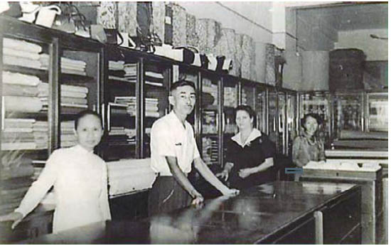

Cáo cái không đếm xuể cô cần bao nhiêu ngày để đến được dãy núi nơi Thành Phố Chết tọa lạc. Quá nhiều ngày.
Chỉ khi lẻn đi một vài giờ để chợp mắt trong lo lắng, Cáo mới trút bỏ bộ lông. Hình dạng con người gợi lại những ký ức, nhưng cô cũng bắt gặp mình nhớ cảm giác cơn gió vuốt ve trên làn da. Cô thậm chí còn nhớ cả trái tim dễ bị tổn thương của mình. Thú, người - cáo cái, phụ nữ. Cô không còn chắc mình là ai nhiều hơn. Hoặc muốn trở thành ai nhiều hơn.
Cô đánh điện cho lão Valiant từ một trạm xe lửa. Người đàn ông lớn tuổi ở trạm điện tín ngờ vực quan sát cô, như thể ông ta có thể thấy bộ lông cáo dưới lớp quần áo cô ăn cắp được. Lão lùn đề nghị gặp nhau ở một ngôi làng trên núi không xa Thành Phố Chết là mấy. Từ quảng trường chợ người ta có thể thấy được đống đổ nát: những tòa tháp và những mái vòm sụp đổ, những bức tường trắng bệch đổ dọc sườn núi như những khúc xương bị tẩy trắng. Mây đen treo trên những con đường chết. Chúng phủ bóng xuống cả thung lũng, và Cáo cảm nhận cái bóng lạnh lẽo của những đám mây ấy khi cô dừng lại trước cửa nhà nghỉ nơi hẹn gặp Valiant.
Cặp sừng dê treo phía trên cửa dùng để xua đuổi những hồn ma mà người dân vẫn khiếp sợ trong vùng này: toggelis, ma sáp, phù thủy núi... họ bị đổ cho mọi tội lỗi vì những con dê chết hoặc những đứa trẻ ốm yếu, dù phần lớn bọn họ không độc ác bằng phân nửa những gì người ta đồn đại, nhưng trong vùng núi này nỗi sợ hãi cứ lớn lên như cỏ dại.
Ánh mắt tay chủ quán trọ nhìn cô khi cô bước vào quầy bar tối tăm cũng bẩn thỉu như chiếc tạp dề của ông ta, cô mừng vì lão Valiant không để cô chờ quá lâu.
“Cô trông như chết rồi ấy!” lão nhận xét trong lúc kéo chiếc ghế mà chủ quán trọ đã chuẩn bị sẵn cho những vị khách lùn. “Ta hy vọng là bộ dạng của Jacob còn tệ hơn! Ta có nên cho cô xem những bức điện mà con chó dối trá ấy gửi cho ta không? ‘Cho tới giờ không có manh mối gì... sẽ cập nhật tin tức cho ông... chuyến đi săn này có thể kéo dài nhiều năm...’ Cô biết gì không? Theo như ta được biết thì người Goyl có thể đang kéo lê hắn ta tới đây bằng một sợi dây thừng đấy!”
Mệt mỏi. Cô thật sự rất mệt mỏi.
Chủ quán trọ mang trà cô đã gọi lên, và mang cho đứa trẻ bàn kế bên một cốc sữa. Cáo cảm thấy đôi tay mình bắt đầu run rẩy khi trông thấy thứ chất lỏng màu trắng ấy.
“Cái gì, quỷ tha ma bắt...”
Valiant chụp lấy cánh tay cô và sửng sốt quan sát cổ tay trầy xước của cô. Cô sẽ mang những vết sẹo do dây xích của Troisclerq gây ra đến cuối đời. Nước mắt ứa ra, nhưng Cáo lau chúng đi. Những giọt nước mắt cũng vô dụng như nỗi lo lắng cô dành cho anh. Mi sẽ cứu được anh ấy. Một cách nào đó. Nhưng cách nào?
Valiant đưa cho cô chiếc khăn tay thêu những chữ cái đầu tên của lão.
“Đừng nói là cô đang lo lắng cho Jacob nhé!” Lão lùn lắc đầu khinh bỉ. “Gã Goyl sẽ không đụng đến một sợi tóc của anh ta đâu! Jacob không thể bị giết. Ta biết ta đang nói gì mà. Ta đã từng một lần đào mộ cho anh ta.”
Ký ức ấy không làm cô dễ chịu hơn. Jacob đã nhiều lần thoát chết trong gang tấc. Nhưng không phải lần này, một giọng nói thì thầm với cô.
Yên lặng nào.
Cậu bé bàn kế bên đang uống sữa. Cáo muốn hướng ánh mắt đi chỗ khác, nhưng cô tự buộc mình phải nhìn. Hay giờ đây cô bắt đầu muốn trốn tránh cả bướm ma và hoa?
Cơn gió thổi bung một cánh cửa sổ, mang theo mưa đá rải trên những mặt bàn gỗ. Tay chủ quán trọ đóng cửa sổ lại với ánh mắt lo lắng, và bắt đầu tán chuyện với một nông dân về những trận lở đất và những con cừu chết đuối - và về một gã điên sống chui rúc trong Thành Phố Chết sáng nay đã đến nông trại của ông ta và tuyên bố về ngày tận thế. Người ta gọi họ là những nhà thuyết giáo, những đàn ông và phụ nữ đã trở nên điên loạn giữa đống đổ nát ấy và tin rằng thành phố bị bỏ hoang che giấu cánh cửa dẫn lên thiên đàng. Cáo đã gặp một người trong số bọn họ ở lối vào làng. Họ trang trí quần áo với thiếc và những mảnh thủy tinh, biến chúng thành một loại áo giáp kỳ quái.
Người nông dân ném cho Valiant một ánh nhìn tăm tối.
“Cô thấy không?” lão lùn thì thầm trong lúc đáp trả ánh mắt ấy bằng một nụ cười răng bọc vàng. “Họ đổ lỗi cho hầm mỏ đã gây ra thời tiết xấu. Nếu những gã ngu chăn dê ấy biết được họ đã đến gần sự thật đến thế nào. Từ khi bọn ta tìm ra hầm mộ, không chỉ có thời tiết trở nên điên loạn thôi đâu. Trong hầm mỏ thường xuyên xảy ra tai nạn. Bọn thuyết giáo nhảy xổ ra ở khắp nơi và lảm nhảm về ngày tận thế, nông dân nhốt gia súc trong chuồng và quả quyết rằng Thành Phố Chết đang sống lại.”
Cáo xoa xoa cổ tay trầy xước. “Ông mang cái xác đi đâu rồi?”
Valiant giơ tay lên ngăn lại. Bé tí như tay trẻ con và đủ mạnh để bẻ cong sắt. “Không nhanh thế đâu! Đối với ta Jacob như một người anh em, nhưng chúng ta phải thương lượng lại. Giá phải tăng lên vì tên ngốc ấy đã để mình bị tóm.”
“Như một người anh em? Ông sẽ bán cả Jacob để đổi lấy một cái móng tay bạc của người lùn!” Cáo rít lên qua mặt bàn. “Tôi sẽ không ngạc nhiên nếu bỗng nhiên ông nhập bọn với gã Goyl chỉ vì gã chia phần cho ông nhiều hơn!”
Ý nghĩ ấy hô biến thành một nụ cười hài lòng trên khuôn mặt lão lùn. Lão coi mọi dẫn chứng về tính xảo quyệt của lão như một lời khen ngợi.
“Chúng ta nên thảo luận tất cả những điều này ở một nơi kín đáo hơn, lão hạ giọng. “Tài xế của ta đang đợi bên ngoài. Tài xế...,” lão nháy mắt đầy ngụ ý với Cáo, “một từ tuyệt diệu, không phải sao? Nghe hiện đại hơn ‘xà ích’ nhiều.”
Khi họ bước ra đường, cơn gió suýt thổi bay cái mũ cao trông nực cười trên đầu lão lùn. Những ngôi nhà co rúm trong bóng của dãy núi đổ xuống, tường nhà thẫm lại vì mưa. Người tài xế đang lo lắng lau sạch nước mưa trên lớp sơn xanh lá thẫm của chiếc xe hơi khổng lồ đậu trước cửa nhà nghỉ, dĩ nhiên là một người trần. Cỗ xe không ngựa đậu trên đường làng trông còn kỳ quái hơn cả cỗ xe Cáo đã thấy ở Vena.
“Ấn tượng, phải không?” lão Valiant nói trong lúc tài xế vội chạy lại chỗ họ, dù cầm trên tay. “Ta là con người của tương lai! Dù ta vẫn hơi thất vọng về vận tốc một chút, nhưng những ánh mắt mà ta thu hoạch được còn hơn cả bù đắp cho việc ấy.”
Người tài xế che dù cho Cáo, dù cơn gió suýt thổi bay nó khỏi tay ông ta, và giúp lão lùn leo lên bậc lên xuống cao ngất ngưởng.
“Dù lý do cho thời tiết kiểu này là gì,” lão Valiant thì thầm với Cáo đang rùng mình khi cô ngồi xuống bên cạnh lão trên ghế bọc da nâu, “khí lạnh giúp việc giữ một ông vua không đầu không bị thối rữa dễ dàng hơn nhiều.”